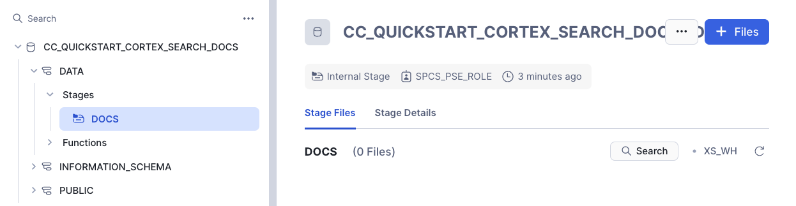
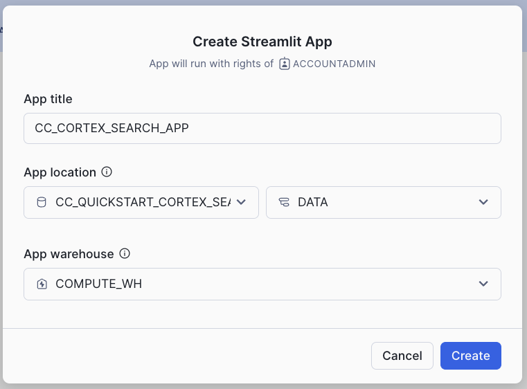
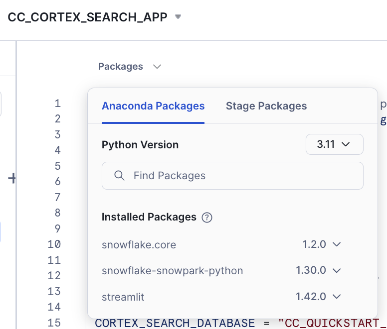
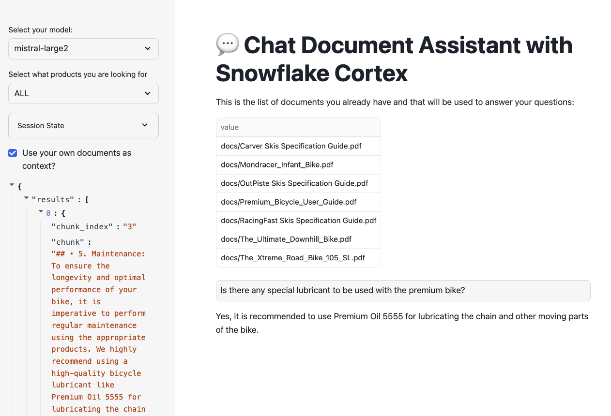

To reduce hallucinations (i.e. incorrect responses), LLMs can be combined with private datasets. Today, the most common approach for reducing hallucinations without having to change the model (e.g. fine-tuning) is the Retrieval Augmented Generation (RAG) framework. RAG allows you to "ground" the model's responses by making a set of relevant documents available to the LLM as context in the response.
In this quickstart we will show you how to quickly and securely build a full-stack RAG application in Snowflake without having to build integrations, manage any infrastructure or deal with security concerns with data moving outside of the Snowflake governance framework.
This guide will leverage Cortex Search, a fully managed service that automatically creates embeddings for your data and perform retrievals using a hybrid search engine, using embeddings for semantic similarity plus keyword search for lexical similarity, achieving state-of-the-art retrieval quality.
We will show you how easy it is to implement RAG via a chat assistant that knows everything about products. To make the assistant an expert in your bikes and snow gears, we are going to give it access to a few User Manuals. This template can easily be adapted to other documents that may be more interesting to you whether its financial reports, research documents or anything else!

RAG Overview
In a typical RAG application, there ia a process to chunk and embeed the content into a Vector store that is used later to retrieve the similar chunks of content, who are passed into a LLM to provide an answer:

Snowflake Cortex Search is a fully managed indexing and retrieval service that simplifies and empower RAG applications. The service automatically creates embeddings and indexes and provides an enterprise search service that can be acessed via APIs:

What You Will Learn
- How to create functions that use Python libraries using Snowpark
- How to use power search experiences using Snowflake Cortex Search
- How to use LLMs using serverless functions in Snowflake Cortex AI
- How to build a front-end with Python using Streamlit in Snowflake
What You Will Build
The final product includes an application that lets users test how the LLM responds with and without the context document(s) to show how RAG can address hallucinations.
Prerequisites
- Snowflake account in a cloud region where Snowflake Cortex LLM functions are supported
- Check LLM availability to help you decide where you want to create your snowflake account
- A Snowflake account with Anaconda Packages enabled by ORGADMIN.
In Snowflake, databases and schemas are used to organize and govern access to data and logic. Let´s start by getting a few documents locally and then create a database that will hold the PDFs.
Step 1. Download example documents
Let's download a few documents we have created about bikes and skis. In those documents we have added some very specific information about those ficticious models. You can always add more or use a different type of documents that you want to try asking questions against. At the end we are going to test how the LLM responds with and without access to the information in the documents.
You can download all documents from this zip file
Individual files:
- Mondracer Infant Bike
- Premium Bycycle User Guide
- Ski Boots TDBootz Special
- The Ultimate Downhill Bike
- The Xtreme Road Bike 105 SL
- Carver Skis Specification Guide
- OutPiste Skis Specification Guide
- RacingFast Skis Specification Guide
Step 2. Open a new Worksheet
Relevant documentation: Creating Snowflake Worksheets.
Step 3. Create a database and a schema
Run the following code inside your newly created worksheet
CREATE DATABASE CC_QUICKSTART_CORTEX_SEARCH_DOCS;
CREATE SCHEMA DATA;
Relevant documentation: Database and Schema management
Step 4. Create a Stage with Directory Table where you will be uploading your documents
create or replace stage docs ENCRYPTION = (TYPE = 'SNOWFLAKE_SSE') DIRECTORY = ( ENABLE = true );
Step 6. Upload documents to your staging area
- Select Data on the left of Snowsight
- Click on your database CC_QUICKSTART_CORTEX_SEARCH_DOCS
- Click on your schema DATA
- Click on Stages and select DOCS
- On the top right click on the +Files botton
- Drag and drop the two PDF files you downloaded

Step 7. Check files has been successfully uploaded
Run this query to check what documents are in the staging area
ls @docs;

In this step we are going to leverage Snowflake native document processing functions to prepare documents before enabling Cortex Search. We are also going to use Cortex CLASSIFY_TEXT function in order to label the type of document being processed so we can use that metadata to filter searches.

Step 1. Use function SNOWFLAKE.CORTEX.PARSE_DOCUMENT to read the PDF documents directly from the staging area. We use here the LAYOUT mode:
CREATE or replace TEMPORARY table RAW_TEXT AS
SELECT
RELATIVE_PATH,
SIZE,
FILE_URL,
build_scoped_file_url(@docs, relative_path) as scoped_file_url,
TO_VARCHAR (
SNOWFLAKE.CORTEX.PARSE_DOCUMENT (
'@docs',
RELATIVE_PATH,
{'mode': 'LAYOUT'} ):content
) AS EXTRACTED_LAYOUT
FROM
DIRECTORY('@docs');
Step 2. Create the table where we are going to store the chunks for each PDF.
create or replace TABLE DOCS_CHUNKS_TABLE (
RELATIVE_PATH VARCHAR(16777216), -- Relative path to the PDF file
SIZE NUMBER(38,0), -- Size of the PDF
FILE_URL VARCHAR(16777216), -- URL for the PDF
SCOPED_FILE_URL VARCHAR(16777216), -- Scoped url (you can choose which one to keep depending on your use case)
CHUNK VARCHAR(16777216), -- Piece of text
CHUNK_INDEX INTEGER, -- Index for the text
CATEGORY VARCHAR(16777216) -- Will hold the document category to enable filtering
);
Step 3. Function SNOWFLAKE.CORTEX.SPLIT_TEXT_RECURSIVE_CHARACTER will be used to split the text into shorter strings.
insert into docs_chunks_table (relative_path, size, file_url,
scoped_file_url, chunk, chunk_index)
select relative_path,
size,
file_url,
scoped_file_url,
c.value::TEXT as chunk,
c.INDEX::INTEGER as chunk_index
from
raw_text,
LATERAL FLATTEN( input => SNOWFLAKE.CORTEX.SPLIT_TEXT_RECURSIVE_CHARACTER (
EXTRACTED_LAYOUT,
'markdown',
1512,
256,
['\n\n', '\n', ' ', '']
)) c;
Label the product category
We are going to use the power of Large Language Models and the function CLASSIFY_TEXT to easily classify the documents we are ingesting in our RAG application. We are going to pass the document name and the first chunk of text into the classify_text function.
First we will create a temporary table with each unique file name and we will be passing that file name and the first chunk of text to CLASSIFY_TEXT. Classification is not mandatory for Cortex Search but we want to use it here to also demo hybrid search.
Run this SQL to create that table:
CREATE OR REPLACE TEMPORARY TABLE docs_categories AS WITH unique_documents AS (
SELECT
DISTINCT relative_path, chunk
FROM
docs_chunks_table
WHERE
chunk_index = 0
),
docs_category_cte AS (
SELECT
relative_path,
TRIM(snowflake.cortex.CLASSIFY_TEXT (
'Title:' || relative_path || 'Content:' || chunk, ['Bike', 'Snow']
)['label'], '"') AS category
FROM
unique_documents
)
SELECT
*
FROM
docs_category_cte;
You can check that table to identify how many categories have been created and if they are correct:
select * from docs_categories;
In this example we got Snow and Bike categories. We will be using those later to filter with Cortex Search:

Now we can just update the table with the chunks of text that will be used by Cortex Search service to include the category for each document:
update docs_chunks_table
SET category = docs_categories.category
from docs_categories
where docs_chunks_table.relative_path = docs_categories.relative_path;
With the table updated we are now ready to enable the Cortex Search service in that table.
After completing all the steps in this section you should see the following objects in your database:
- The DOCS_CHUNKS_TABLE that contains the text and categories for each document
- The DOCS Stage with your PDF files
- The PDF_TEXT_CHUNKER function that extracts and chunk the text from the PDF files

Next step is to create the CORTEX SEARCH SERVICE in the table we have created before. We will execute this SQL command:
create or replace CORTEX SEARCH SERVICE CC_SEARCH_SERVICE_CS
ON chunk
ATTRIBUTES category
warehouse = COMPUTE_WH
TARGET_LAG = '1 minute'
as (
select chunk,
chunk_index,
relative_path,
file_url,
category
from docs_chunks_table
);
- The name of the service is CC_SEARCH_SERVICE_CS
- The service will use the column chunk to create embeddings and perform retrieval based on similarity search
- The column category could be used as a filter
- To keep this service updated the warehosue COMPUTE_WH will be used. This name is used by default in trial accounts but you may want to type the name of your own warehouse.
- The service will be refreshed every minute
- The data retrieved will contain the chunk, relative_path, file_url and category
This is all what we have to do. There is no need here to create embeddings as that is done automatically. We can now use the API to query the service.
To make it easy for anyone to ask questions against the Cortex Search service, let's create a fairly simple front-end using Streamlit. As part of the app, we will provide the end-user with a toggle that allows testing of LLM responses with and without access to the context to observe the differences. The app will also show what are the pieces of text that the service is returning and that are used to fill the calls to LLM to create the answers.
Streamlit in Snowflake allows you to run the app and share it with other Snowflake users within the same account. This ensures data remains secure and protected and is only available to users that meet your role-based access policies.
Relevant documentation: Introduction to Streamlit in Snowflake
- Click on the Streamlit tab on the left
- Clickn on + Streamlit App button on the right
- Give the App a name (CC_CORTEX_SEARCH_APP in my example)
- Select the warehouse to run the App (a Small WH will be enough)
- Choose the CC_QUICKSTART_CORTEX_SEARCH_DOCS database and DATA schema

The Streamlit app comes with a default template you can delete and replace with this code which includes the front-end elements:
- Table with list of available documents
- Toggle to choose to use documents as context
- Question input box
- Filter for a type of product
And also includes the retrieval and generation logic:
- Using the Cortex Search service to retrieve the relevant chunks of text
- Prompt template that instructs LLM how to answer using relevant chunks
import streamlit as st # Import python packages
from snowflake.snowpark.context import get_active_session
from snowflake.core import Root
import pandas as pd
import json
pd.set_option("max_colwidth",None)
### Default Values
NUM_CHUNKS = 3 # Num-chunks provided as context. Play with this to check how it affects your accuracy
# service parameters
CORTEX_SEARCH_DATABASE = "CC_QUICKSTART_CORTEX_SEARCH_DOCS"
CORTEX_SEARCH_SCHEMA = "DATA"
CORTEX_SEARCH_SERVICE = "CC_SEARCH_SERVICE_CS"
######
######
# columns to query in the service
COLUMNS = [
"chunk",
"chunk_index",
"relative_path",
"category"
]
session = get_active_session()
root = Root(session)
svc = root.databases[CORTEX_SEARCH_DATABASE].schemas[CORTEX_SEARCH_SCHEMA].cortex_search_services[CORTEX_SEARCH_SERVICE]
### Functions
def config_options():
st.sidebar.selectbox('Select your model:',('mistral-large2', 'llama3.1-70b',
'llama3.1-8b', 'snowflake-arctic'), key="model_name")
categories = session.sql("select category from docs_chunks_table group by category").collect()
cat_list = ['ALL']
for cat in categories:
cat_list.append(cat.CATEGORY)
st.sidebar.selectbox('Select what products you are looking for', cat_list, key = "category_value")
st.sidebar.expander("Session State").write(st.session_state)
def get_similar_chunks_search_service(query):
if st.session_state.category_value == "ALL":
response = svc.search(query, COLUMNS, limit=NUM_CHUNKS)
else:
filter_obj = {"@eq": {"category": st.session_state.category_value} }
response = svc.search(query, COLUMNS, filter=filter_obj, limit=NUM_CHUNKS)
st.sidebar.json(response.json())
return response.json()
def create_prompt (myquestion):
if st.session_state.rag == 1:
prompt_context = get_similar_chunks_search_service(myquestion)
prompt = f"""
You are an expert chat assistance that extracs information from the CONTEXT provided
between <context> and </context> tags.
When ansering the question contained between <question> and </question> tags
be concise and do not hallucinate.
If you don´t have the information just say so.
Only anwer the question if you can extract it from the CONTEXT provideed.
Do not mention the CONTEXT used in your answer.
<context>
{prompt_context}
</context>
<question>
{myquestion}
</question>
Answer:
"""
json_data = json.loads(prompt_context)
relative_paths = set(item['relative_path'] for item in json_data['results'])
else:
prompt = f"""[0]
'Question:
{myquestion}
Answer: '
"""
relative_paths = "None"
return prompt, relative_paths
def complete(myquestion):
prompt, relative_paths =create_prompt (myquestion)
cmd = """
select snowflake.cortex.complete(?, ?) as response
"""
df_response = session.sql(cmd, params=[st.session_state.model_name, prompt]).collect()
return df_response, relative_paths
def main():
st.title(f":speech_balloon: Chat Document Assistant with Snowflake Cortex")
st.write("This is the list of documents you already have and that will be used to answer your questions:")
docs_available = session.sql("ls @docs").collect()
list_docs = []
for doc in docs_available:
list_docs.append(doc["name"])
st.dataframe(list_docs)
config_options()
st.session_state.rag = st.sidebar.checkbox('Use your own documents as context?')
question = st.text_input("Enter question", placeholder="Is there any special lubricant to be used with the premium bike?", label_visibility="collapsed")
if question:
response, relative_paths = complete(question)
res_text = response[0].RESPONSE
st.markdown(res_text)
if relative_paths != "None":
with st.sidebar.expander("Related Documents"):
for path in relative_paths:
cmd2 = f"select GET_PRESIGNED_URL(@docs, '{path}', 360) as URL_LINK from directory(@docs)"
df_url_link = session.sql(cmd2).to_pandas()
url_link = df_url_link._get_value(0,'URL_LINK')
display_url = f"Doc: [{path}]({url_link})"
st.sidebar.markdown(display_url)
if __name__ == "__main__":
main()

The reason is that we need to add the package snowflake.core in our Streamlit App.
Click on Packages and look for snowflake.core
You may want to use the latest versions available. This is the combination that has been tested for this lab:
- snowflake.core = 1.2.0
- python = 3.11
- snowflake-snowpark-python = 1.30.0
- streamlit = 1.42.0

After adding it you should be able to run the app.
Code Walkthrough
Let´s go step by step what that code is doing:
First, we use st.sidebar to place all options on the left. There we include:
- A selectbox for the LLM to be used
- A selectbox to allow filtering for one category. This will be used by Cortex Search
- Check the session state (really for debugging purposes when building the app)
- We will print here the chunks used and the link to the relevant documents
The main() function collect the user question and call a complete() function with the question. This one calls the create_prompt() function that uses get_similar_chunks_search_service() with the question. This is the function that calls Cortex Search service for retrieval with this code:
def get_similar_chunks_search_service(query):
if st.session_state.category_value == "ALL":
response = svc.search(query, COLUMNS, limit=NUM_CHUNKS)
else:
filter_obj = {"@eq": {"category": st.session_state.category_value} }
response = svc.search(query, COLUMNS, filter=filter_obj, limit=NUM_CHUNKS)
st.sidebar.json(response.json())
return response.json()
Depending if we want to filter for any category, we use the filter object or not. Previously, we have created the svc handler that is pointing to the Cortex Search service:
root = Root(session)
svc = root.databases[CORTEX_SEARCH_DATABASE].schemas[CORTEX_SEARCH_SCHEMA].cortex_search_services[CORTEX_SEARCH_SERVICE]
The complete() function which combines the LLM, the prompt template and whether to use the context or not to generate a response which includes a link to the asset from which the answer was obtained.
def complete(myquestion):
prompt, relative_paths =create_prompt (myquestion)
cmd = """
select snowflake.cortex.complete(?, ?) as response
"""
df_response = session.sql(cmd, params=[st.session_state.model_name, prompt]).collect()
return df_response, relative_paths
Deploy and share your AI-powered app
Streamlit in Snowflake provides a side-by-side editor and preview screen that makes it easy and fast to iterate and visalize changes.

In the app, we can see the documents we had uploaded previously and can be used to ask questions while trying multiple options using interactive widgets available on the side.
To test out the RAG framework, here a few questions you can ask and then use the interactive widgets to compare the results when using a different LLM or when choosing to get a response without the context. This is related to very specific information that we have added into the documents and that is very unique to our products.
- Is there any special lubricant to be used with the premium bike?
- Does the mondracer infant bike need any special tool?
- Is there any temperature to be considered with the premium bicycle?
- What is the temperature to store the ski boots?
- Where have the ski boots been tested and who tested them?
Other things to test
In this example we have just decided a fixed format for chunks and used only the top result in the retrieval process. This blog provides some considerations about settings in the chunking strategy.
This is the recommendation from the Cortex Search documentation:
For optimal search results with Cortex Search, Snowflake recommends splitting the text in your search column into chunks of no more than 512 tokens (about 385 English words). A token is the smallest unit of text processed by a large language model.
When an entry in the search column contains more than 512 tokens, Cortex Search performs keyword-based retrieval on the entire body of text, but only uses the first 512 tokens for semantic (i.e., vector-based) retrieval.
LATERAL FLATTEN( input => SNOWFLAKE.CORTEX.SPLIT_TEXT_RECURSIVE_CHARACTER (
EXTRACTED_LAYOUT,
'markdown',
1512,
256,
['\n\n', '\n', ' ', '']
)) c;
You can also try different instructions in your prompt and see how the responses may vary. Simply replace any of the text and run the app again. The prompt is very important. Make sure you are clear in the ask and the instruction and it may change depending on your own use case.
prompt = f"""
You are an expert chat assistance that extracs information from the CONTEXT provided
between <context> and </context> tags.
When ansering the question contained between <question> and </question> tags
be concise and do not hallucinate.
If you don´t have the information just say so.
Only anwer the question if you can extract it from the CONTEXT provideed.
Do not mention the CONTEXT used in your answer.
<context>
{prompt_context}
</context>
<question>
{myquestion}
</question>
Answer:
"""
You can also try to change the number of chunks that are provided as context by simply modifying this value:
NUM_CHUNKS = 3 # Num-chunks provided as context. Play with this to check how it affects your accuracy
In the previous section we have created a simple interface where we can ask questions about our documents and select the LLM running within Snowflake Cortex to answer the question. We have seen that when no context from our documents is provided, we just get a general answer, versus a specific answer related to our documents when we use context from the PDFs. But what if we want to have a conversation sytle?
Streamlit makes it very easy to create chat interfaces with its Chat Elements. In this section we are going to see how we can write a simple app that can be used to have a conversation, and how it uses the data from our documents to provide answers.
Large Language Models (LLMs) are stateless. That means when we make a call to any of them, it does not remember what the previous call was about. With Snowflake Cortex, each complete() call we make is independent, even when using the same model. There are several techniques that can be used to keep the conversation flow and do not forget the chat history. In summary, the app needs to keep a memory of the conversation and provide it in each call to the LLM. As we know, calls to LLMs are restricted by the context window length that can be used.
In this lab, we are going to use a slide window concept. This helps to remember just a number of past interactions when calling the LLM. We are also going to summarize the previous conversation in order to find the right chunk in our documents that will help the LLM and provide the right answer. In the previous section, we were embedding the new question to find the right chunk for context. Here, we are going to also include the previous summary to find the chunks that will be used as context.

First let´s create the new Streamlit App and then we will discuss each of the steps. Give it a name and create it within the database and schema that we are using in this lab (CC_QUICKSTART_CORTEX_SEARCH_DOCS.DATA) or whatever name you may have chosen.

In this second app, we are going to demo how to access the Complete function from Snowlfake Cortex via Python API instead of SQL as we did in the previous app. To get access to the API, you need to specify the snowflake-ml-python package in your Streamlit app. This combination of packages version is known to work well:
- snowflake-ml-python = 1.8.1
- snowflake.core = 1.2.0
- python = 3.11
- snowflake-snowpark-python = 1.30.0
- streamlit = 1.42.0

The Streamlit app comes with a default template you can delete and replace with this code which includes the front-end elements:
import streamlit as st # Import python packages
from snowflake.snowpark.context import get_active_session
from snowflake.cortex import Complete
from snowflake.core import Root
import pandas as pd
import json
pd.set_option("max_colwidth",None)
### Default Values
NUM_CHUNKS = 3 # Num-chunks provided as context. Play with this to check how it affects your accuracy
slide_window = 7 # how many last conversations to remember. This is the slide window.
# service parameters
CORTEX_SEARCH_DATABASE = "CC_QUICKSTART_CORTEX_SEARCH_DOCS"
CORTEX_SEARCH_SCHEMA = "DATA"
CORTEX_SEARCH_SERVICE = "CC_SEARCH_SERVICE_CS"
######
######
# columns to query in the service
COLUMNS = [
"chunk",
"chunk_index",
"relative_path",
"category"
]
session = get_active_session()
root = Root(session)
svc = root.databases[CORTEX_SEARCH_DATABASE].schemas[CORTEX_SEARCH_SCHEMA].cortex_search_services[CORTEX_SEARCH_SERVICE]
### Functions
def config_options():
st.sidebar.selectbox('Select your model:',('mistral-large2', 'llama3.1-70b',
'llama3.1-8b', 'snowflake-arctic'), key="model_name")
categories = session.table('docs_chunks_table').select('category').distinct().collect()
cat_list = ['ALL']
for cat in categories:
cat_list.append(cat.CATEGORY)
st.sidebar.selectbox('Select what products you are looking for', cat_list, key = "category_value")
st.sidebar.checkbox('Do you want that I remember the chat history?', key="use_chat_history", value = True)
st.sidebar.checkbox('Debug: Click to see summary generated of previous conversation', key="debug", value = True)
st.sidebar.button("Start Over", key="clear_conversation", on_click=init_messages)
st.sidebar.expander("Session State").write(st.session_state)
def init_messages():
# Initialize chat history
if st.session_state.clear_conversation or "messages" not in st.session_state:
st.session_state.messages = []
def get_similar_chunks_search_service(query):
if st.session_state.category_value == "ALL":
response = svc.search(query, COLUMNS, limit=NUM_CHUNKS)
else:
filter_obj = {"@eq": {"category": st.session_state.category_value} }
response = svc.search(query, COLUMNS, filter=filter_obj, limit=NUM_CHUNKS)
st.sidebar.json(response.json())
return response.json()
def get_chat_history():
#Get the history from the st.session_stage.messages according to the slide window parameter
chat_history = []
start_index = max(0, len(st.session_state.messages) - slide_window)
for i in range (start_index , len(st.session_state.messages) -1):
chat_history.append(st.session_state.messages[i])
return chat_history
def summarize_question_with_history(chat_history, question):
# To get the right context, use the LLM to first summarize the previous conversation
# This will be used to get embeddings and find similar chunks in the docs for context
prompt = f"""
Based on the chat history below and the question, generate a query that extend the question
with the chat history provided. The query should be in natual language.
Answer with only the query. Do not add any explanation.
<chat_history>
{chat_history}
</chat_history>
<question>
{question}
</question>
"""
sumary = Complete(st.session_state.model_name, prompt)
if st.session_state.debug:
st.sidebar.text("Summary to be used to find similar chunks in the docs:")
st.sidebar.caption(sumary)
sumary = sumary.replace("'", "")
return sumary
def create_prompt (myquestion):
if st.session_state.use_chat_history:
chat_history = get_chat_history()
if chat_history != []: #There is chat_history, so not first question
question_summary = summarize_question_with_history(chat_history, myquestion)
prompt_context = get_similar_chunks_search_service(question_summary)
else:
prompt_context = get_similar_chunks_search_service(myquestion) #First question when using history
else:
prompt_context = get_similar_chunks_search_service(myquestion)
chat_history = ""
prompt = f"""
You are an expert chat assistance that extracs information from the CONTEXT provided
between <context> and </context> tags.
You offer a chat experience considering the information included in the CHAT HISTORY
provided between <chat_history> and </chat_history> tags..
When ansering the question contained between <question> and </question> tags
be concise and do not hallucinate.
If you don´t have the information just say so.
Do not mention the CONTEXT used in your answer.
Do not mention the CHAT HISTORY used in your asnwer.
Only anwer the question if you can extract it from the CONTEXT provideed.
<chat_history>
{chat_history}
</chat_history>
<context>
{prompt_context}
</context>
<question>
{myquestion}
</question>
Answer:
"""
json_data = json.loads(prompt_context)
relative_paths = set(item['relative_path'] for item in json_data['results'])
return prompt, relative_paths
def answer_question(myquestion):
prompt, relative_paths =create_prompt (myquestion)
response = Complete(st.session_state.model_name, prompt)
return response, relative_paths
def main():
st.title(f":speech_balloon: Chat Document Assistant with Snowflake Cortex")
st.write("This is the list of documents you already have and that will be used to answer your questions:")
docs_available = session.sql("ls @docs").collect()
list_docs = []
for doc in docs_available:
list_docs.append(doc["name"])
st.dataframe(list_docs)
config_options()
init_messages()
# Display chat messages from history on app rerun
for message in st.session_state.messages:
with st.chat_message(message["role"]):
st.markdown(message["content"])
# Accept user input
if question := st.chat_input("What do you want to know about your products?"):
# Add user message to chat history
st.session_state.messages.append({"role": "user", "content": question})
# Display user message in chat message container
with st.chat_message("user"):
st.markdown(question)
# Display assistant response in chat message container
with st.chat_message("assistant"):
message_placeholder = st.empty()
question = question.replace("'","")
with st.spinner(f"{st.session_state.model_name} thinking..."):
response, relative_paths = answer_question(question)
response = response.replace("'", "")
message_placeholder.markdown(response)
if relative_paths != "None":
with st.sidebar.expander("Related Documents"):
for path in relative_paths:
cmd2 = f"select GET_PRESIGNED_URL(@docs, '{path}', 360) as URL_LINK from directory(@docs)"
df_url_link = session.sql(cmd2).to_pandas()
url_link = df_url_link._get_value(0,'URL_LINK')
display_url = f"Doc: [{path}]({url_link})"
st.sidebar.markdown(display_url)
st.session_state.messages.append({"role": "assistant", "content": response})
if __name__ == "__main__":
main()
For educational purposes we have enabled a check "Do you want that I remember the chat history?" that when disabled, the app will not use memory. So each question will be independent from the previous ones. This is what happens when we are not using memory:

Basically, each question is answered individually. The second question loses the context.
Now when asking the same questions but using memory the firs thing to notice is that we have re-created the new question adding the previous context:

The new question that is used to search for similar chunks is "What is the Rincon del Cielo bike made of?"
Code Walkthrough
def get_chat_history():
This function is going to return the previous conversation in the chat up to a limit defined by the global variable slide_window. We take advantage of:
st.session_state.messages
Everytime a question is asked is stored in the state with this code:
st.session_state.messages.append({"role": "user", "content": question})
And the responses provided are also stored:
st.session_state.messages.append({"role": "assistant", "content": res_text})
Therefore st.session_state.messages is used as the chat memory
This next function summarize_question_with_history() takes the chat_history that we have got previously and the new question being asked. Remember that we are using the information from the PDF documents to answer questions. Therefore, we need to identify using Cortex Search what chunk of text will be relevant to answer the question.
Therefore, if we just use "what is it made of" sentence to look for the similar chunks, probably we will not get the right one. We need to include more information in the call we make to get_similar_chunks().
Take a look this summarize_question_with_history() function:
def summarize_question_with_history(chat_history, question):
# To get the right context, use the LLM to first summarize the previous conversation
# This will be used to get embeddings and find similar chunks in the docs for context
prompt = f"""
Based on the chat history below and the question, generate a query that extend the question
with the chat history provided. The query should be in natual language.
Answer with only the query. Do not add any explanation.
<chat_history>
{chat_history}
</chat_history>
<question>
{question}
</question>
"""
sumary = Complete(st.session_state.model_name, prompt)
if st.session_state.debug:
st.sidebar.text("Summary to be used to find similar chunks in the docs:")
st.sidebar.caption(sumary)
sumary = sumary.replace("'", "")
return sumary
In that function we are using the Complete() API where we have created a specific prompt to provide a chat history and the new question in order to get the query that will be used to find the right context.
In order to experiment with this, we have also created a selection check "Debug: Click to see summary generated of previous conversation" that will allow you to see what is the question being used to look for similar chunks.
Now the function:
def create_prompt (myquestion):
Use all those previous functions to get the chat_history and prompt_context and build the prompt. So, this prompt is adding the previous conversation plus the context extracted from the PDFs and the new question.
prompt = f"""
You are an expert chat assistance that extracs information from the CONTEXT provided
between <context> and </context> tags.
You offer a chat experience considering the information included in the CHAT HISTORY
provided between <chat_history> and </chat_history> tags..
When ansering the question contained between <question> and </question> tags
be concise and do not hallucinate.
If you don´t have the information just say so.
Do not mention the CONTEXT used in your answer.
Do not mention the CHAT HISTORY used in your asnwer.
Only anwer the question if you can extract it from the CONTEXT provideed.
<chat_history>
{chat_history}
</chat_history>
<context>
{prompt_context}
</context>
<question>
{myquestion}
</question>
Answer:
"""
What makes this very easy with Streamlit are st.chat_input and st.chat_message. This is the code that get the question with st.chat_input, add it to st.chat_message and to the memmory with st.session_state.messages.append and call answer_question() function to get the answer that is also printed and stored:
if question := st.chat_input("What do you want to know about your products?"):
# Add user message to chat history
st.session_state.messages.append({"role": "user", "content": question})
# Display user message in chat message container
with st.chat_message("user"):
st.markdown(question)
# Display assistant response in chat message container
with st.chat_message("assistant"):
message_placeholder = st.empty()
question = question.replace("'","")
with st.spinner(f"{st.session_state.model_name} thinking..."):
response, relative_paths = answer_question(question)
response = response.replace("'", "")
message_placeholder.markdown(response)
if relative_paths != "None":
with st.sidebar.expander("Related Documents"):
for path in relative_paths:
cmd2 = f"select GET_PRESIGNED_URL(@docs, '{path}', 360) as URL_LINK from directory(@docs)"
df_url_link = session.sql(cmd2).to_pandas()
url_link = df_url_link._get_value(0,'URL_LINK')
display_url = f"Doc: [{path}]({url_link})"
st.sidebar.markdown(display_url)
st.session_state.messages.append({"role": "assistant", "content": response})
We are also printing the link to the documents being used to answer the questions.
Here another suggestion based on specific info from the documents (unique for us):
- What is the name of the ski boots?
- Where have been tested?
- Who tested them?
- Do they include any special component?
You can try with your own documents. You will notice different peformance depending on the LLM you will be using.
Maintaining your RAG system up to date when new documents are added, deleted or updated can be tedious. Snowflake makes it very easy. In one side, Cortex Search is a self-managed service. We only need to add, delete or update rows in the table where Cortex Search Service has been enabled and automatically the service will update the indexes and create new embeddings based on the frequency defined during service creation.
In addition, we can use Snowflake features like Streams, Tasks and Stored Procedures to automatically process new PDF files as they are added into Snowflake.
First we create two streams for the DOCS staging area. One is going to be used to process deletes and other to process inserts. The Streams captures the chages on the Directory Table used for the DOCS staging area. So we can track new updates and deletes:
create or replace stream insert_docs_stream on stage docs;
create or replace stream delete_docs_stream on stage docs;
Second, we are going to define a Stored Procedure that process those streams to:
- Delete from the docs_chunk_table the content for files that has been deleted from the stagin area, so they are no longer relevant
- Parse new PDF documents that has been added into the staging area using PARSE_DOCUMENT
- Chunk the new document into pieces using SPLIT_TEXT_RECURSIVE_CHARACTER
- Classify the new documents and update the label (this step is optional just to show the part of the possible)
Create the Stored Procedure:
create or replace procedure insert_delete_docs_sp()
RETURNS VARCHAR
LANGUAGE SQL
AS
$$
BEGIN
DELETE FROM docs_chunks_table
USING delete_docs_stream
WHERE docs_chunks_table.RELATIVE_PATH = delete_docs_stream.RELATIVE_PATH
and delete_docs_stream.METADATA$ACTION = 'DELETE';
CREATE or replace TEMPORARY table RAW_TEXT AS
SELECT
RELATIVE_PATH,
SIZE,
FILE_URL,
build_scoped_file_url(@docs, relative_path) as scoped_file_url,
TO_VARCHAR (
SNOWFLAKE.CORTEX.PARSE_DOCUMENT (
'@docs',
RELATIVE_PATH,
{'mode': 'LAYOUT'} ):content
) AS EXTRACTED_LAYOUT
FROM
insert_docs_stream
WHERE
METADATA$ACTION = 'INSERT';
-- Insert new docs chunks
insert into docs_chunks_table (relative_path, size, file_url,
scoped_file_url, chunk, chunk_index)
select relative_path,
size,
file_url,
scoped_file_url,
c.value::TEXT as chunk,
c.INDEX::INTEGER as chunk_index
from
RAW_TEXT,
LATERAL FLATTEN( input => SNOWFLAKE.CORTEX.SPLIT_TEXT_RECURSIVE_CHARACTER (
EXTRACTED_LAYOUT,
'markdown',
1512,
256,
['\n\n', '\n', ' ', '']
)) c;
-- Classify the new documents
CREATE OR REPLACE TEMPORARY TABLE docs_categories AS
WITH unique_documents AS (
SELECT DISTINCT
d.relative_path, d.chunk
FROM
docs_chunks_table d
INNER JOIN
RAW_TEXT r
ON d.relative_path = r.relative_path
WHERE
d.chunk_index = 0
),
docs_category_cte AS (
SELECT
relative_path,
TRIM(snowflake.cortex.CLASSIFY_TEXT (
'Title:' || relative_path || 'Content:' || chunk, ['Bike', 'Snow']
)['label'], '"') AS category
FROM
unique_documents
)
SELECT
*
FROM
docs_category_cte;
-- Update cathegories
update docs_chunks_table
SET category = docs_categories.category
from docs_categories
where docs_chunks_table.relative_path = docs_categories.relative_path;
END;
$$;
Now we can create a Task that every X minutes can check if there is new data in the stream and take an action. We are setting the schedule to 5 minutes so you can follow the execution, but fell free to reduce the time to 1 minute if needed. Consider what would be best for your app and how often new docs are updated.
We define:
- Where: This is going to be executed using warehouse COMPUTE_WH. Please name to your own Warehouse.
- When: Check every 5 minutes, and execute in the case of new records in the delete_docs_stream stream (we could also use the other stream)
- What to do: call the stored procedure insert_delete_docs_sp()
Execute this code in your Snowflake worksheet to create the task:
create or replace task insert_delete_docs_task
warehouse = COMPUTE_WH
schedule = '5 minute'
when system$stream_has_data('delete_docs_stream')
as
call insert_delete_docs_sp();
alter task insert_delete_docs_task resume;
After uploading the document (and if you are fast enough before the doc is automatically processed) you can see the doc in the stream:
Now let's test how it works.
First your streams will be empty:
select * from delete_docs_stream;
select * from insert_docs_stream;
We are going to test the modification of a document and the deletion of other.
First you can check what is the response to the question:
"Is there any special lubricant to be used with the premium bike?"
You should get something pointing to Premium Oil 2287:

Now let's upate the document for the Premium Bike as we have a new lubricant to be used. Also you can test the deletion of another document.
Go to your database, select the schema DATA, the Stage DOCS, click on "Premium_Bicycle_User_Guide.pdf" document and Remove:

We no longer have Ski boots, so you can also remove Ski_Boots_TDBootz_Special.pdf document.
Now you can add the new version of the "Premium_Bicycle_User_Guide.pdf" document. Download the new version from:
If you read the document, you will notice that the new Oil recommended is Premium Oil 5555
On the top right, click on +Files and add this new file:

If you have done this fast enough (in less than 5 minutes), you can check that both streams have detected the changes:
select * from delete_docs_stream;
select * from insert_docs_stream;
The column METADATA$ACTION tell us if this is a DELETE or an INSERT.
Select specific columns so you can see the columns from the Stream:

You can also force the task execution with:
execute task insert_delete_docs_task;
Note that once the Stream has been processed it will be empty.
Under Monitoring -> Task History, you can find your task and monitor the execution:

And now you can go back to your streamlit app to ask again the question:
"Is there any special lubricant to be used with the premium bike?"

And check that the new document is being used.
If you ask the question: "Who tested the ski boots?", you should get somethink like "The context provided does not mention anyone testing ski boots" as the document has been deleted.
Once you have finish testing uploading new documents and asking questions, you may want to suspend the task:
alter task insert_delete_docs_task suspend;
In order to avoid consuming credits, you can drop the databse used for this lab.
drop database CC_QUICKSTART_CORTEX_SEARCH_DOCS;
Congratulations! You've successfully performed RAG using Snowflake Cortex Search and securely built a full-stack RAG application in Snowflake without having to build integrations, manage any infrastructure or deal with security concerns with data moving outside of the Snowflake governance framework.
What You Learned
- Creating functions to automatically extract text and chunk PDF files
- Automatically identify document categories using LLMs
- Using Snowflake Cortex Search to use LLMs to answer questions
- Building an application front-end with Streamlit